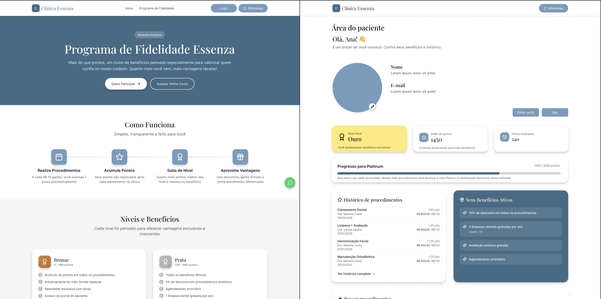

UX/UI · Frontend · Web
Sistema de Fidelização
Criando uma experiência de fidelização para aproximar clínicas e seus pacientes.

Sobre o projeto
Projeto desenvolvido na Empresa Junior que participo, voltado à criação e gestão de ações de relacionamento entre clínicas e seus pacientes. O desafio foi organizar esses fluxos em uma experiência simples para as clínicas e clara para os pacientes, transformando requisitos do produto em uma interface objetiva e fácil de navegar.
Do protótipo ao produto
Atuei nas etapas de UX/UI e prototipação, estruturando fluxos e interfaces a partir dos requisitos do produto. Posteriormente, também participei da implementação frontend, trabalhando em conjunto com o time de desenvolvimento para transformar os protótipos em uma aplicação funcional. Essa proximidade entre design e desenvolvimento permitiu acompanhar o produto além da etapa de prototipação e entender como as decisões de interface se comportam durante a implementação.